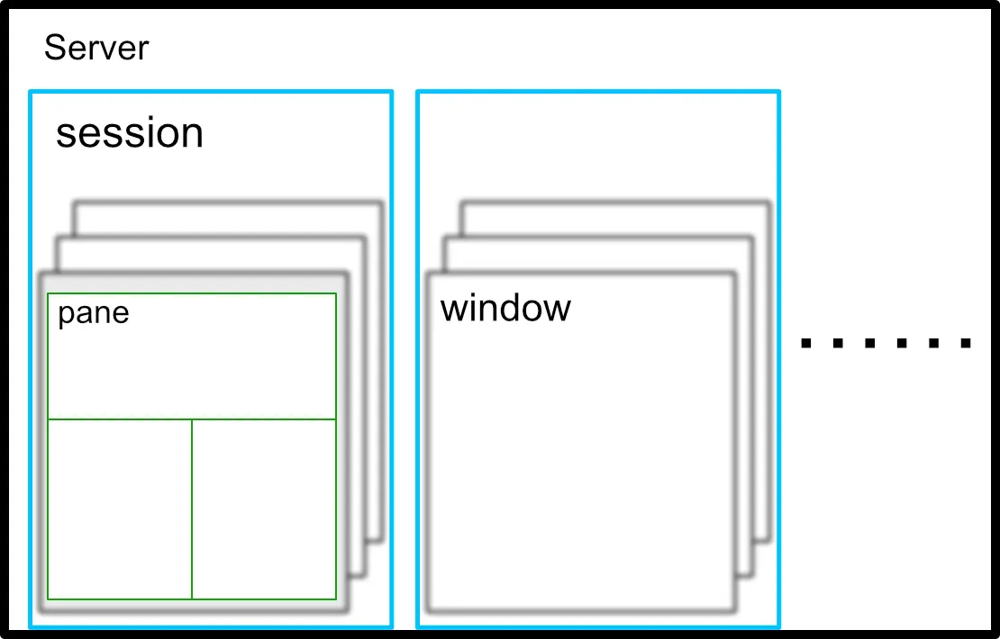

HTML + CSS + JavaScript 技巧收集
TamperMonkey 脚本开发教程
TM（TamperMonkey） 用户脚本，用来增强网页功能。 现在网络上很多关于安装、使用的教程，但却没有开发教程，有点令人失望。
Vim 基础教程：当作 NotePad 使用
Tmux 简明教程
Tmux 是一个可在 Linux, MacOS 中运行的终端复用工具. 最直观的效果就是将终端一个屏幕划分成多个屏幕使用.
Tmux 的划分涉及到四个层次: Server, Session, Window, Pane.
其中, 一个 Linux 主机只能运行一个 Server, 其他的则是按照层次有着 一对多 的关系:
一个 Server 上可运行多个 Session
一个 Session 可包含多个 Window
一个 Window 可被划分为多个 Pane
看看下面这个示意图:

Tmux 示意图
tmux 的配置文件为 ~/.tmux.conf
Graphics Magick 命令行使用方法
文件隐写术
谁不想在自己的电脑上藏一些东西呢？ 要隐藏一些内容，设置隐藏文件夹太 LOW，可以将硬盘主动分一个区，在不用的时候取消挂载，这样别人就算勾选了 『显示隐藏文件和文件夹』也看不到，因为内容根本没进入文件系统。
{kind=link}
不过，这种方法只适用于本地环境，如果通过网络传输，就没有意义了。 因此，我们可以尝试使用文件级的 Hack 来达成目的。
使用 GitHub Actions 发布博客
GitHub 出品了官方 CI 系统：GitHub Actions，可以通过阅读其文档 1 获取相关信息。 本文介绍如何通过 GitHub Actions 配置 Python 构建环境，并且将本文的输出发布到 GitHub Pages 仓库里去。
另外，也可以参考阮一峰的这两篇文章：
- GitHub Actions 入门教程
-
https://www.ruanyifeng.com/blog/2019/09/getting-started-with-github-actions.html
- GitHub Actions 教程：定时发送天气邮件
关于博客从 Hexo 迁移到 Nikola 这件事
简单的 PowerShell 教程
介绍了 PowerShell 的控制语句、函数定义和管道操作中常用的方法。
目录